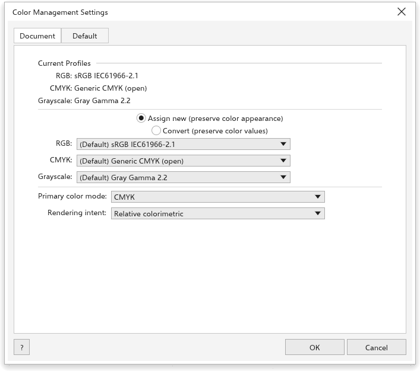

色彩管理
螢幕以紅、綠、藍光顯示色彩；印表機則混合青色、洋紅色、黃色和黑色油墨。色彩管理使用色彩描述檔來描述每個裝置，讓色彩從螢幕到印刷頁面都保持相同的外觀。這些設定位於 工具 > 色彩管理，也就是 色彩管理設定 對話方塊。在您按一下 確定 之前不會有任何變更。

繪圖的描述檔
文件 分頁設定作用中繪圖的描述檔。
- 目前的描述檔 顯示繪圖目前使用的 RGB、CMYK 和灰階描述檔。
- 選擇套用新描述檔的方式：
- 指定新的 (保留色彩值)：色彩值保持不變，其外觀則依新描述檔改變；
- 轉換 (保留色彩外觀)：轉換 CMYK 色彩，使其在新描述檔中看起來相同。
- 選擇 RGB 描述檔、CMYK 描述檔 和 灰階 描述檔。每個清單都先列出預設描述檔，然後是您電腦上找到的所有描述檔。載入色彩描述檔 會加入描述檔檔案（
.icc、.icm）。 - 主要色彩模式：CMYK 或 RGB。
- 演算方式：無法顯示的色彩如何納入可顯示範圍：相對色度（預設）、感應式、飽和度 或 絕對色度。
CMYK 描述檔會隨繪圖保存，也會寫入版本 16 以上的 .cdr 檔案。
新繪圖的預設值
預設 分頁設定新繪圖所使用的設定，以及色彩的轉換方式。
- 預設集：適用於北美、歐洲、日本或網頁與螢幕工作的現成設定。儲存預設集 會以 預設集名稱 儲存您自己的設定；刪除預設集 會移除一個預設集。
- 預設的 RGB 描述檔、CMYK 描述檔 和 灰階描述檔、主要色彩模式 以及 演算方式。
- 色彩轉換：
- 色彩引擎：TraceDraw ICC 引擎（使用描述檔）或 內建公式；
- 保留純黑：只使用黑色油墨的色彩在轉換後仍只使用黑色油墨；
- 將灰色對應為 CMYK 黑（預設開啟）：轉換為 CMYK 的灰色只使用黑色油墨；
- 黑點補償（預設開啟）：讓最暗的色調保持區別。
- 開啟原則：您開啟的檔案其描述檔會如何處理，分別針對 RGB、CMYK 和灰階：使用內嵌的色彩描述檔、指定預設色彩描述檔 或 轉換為預設色彩描述檔。當檔案使用其他描述檔或沒有描述檔時，色彩描述檔不符時警告 和 缺少色彩描述檔時警告 會在狀態列中顯示訊息。
- 匯入與貼上原則：對於您匯入或貼上的內容，選擇 轉換為文件色彩描述檔 或 指定文件色彩描述檔。
- 特別色定義：特別色是以 Lab 值、CMYK 值 還是 RGB 值 定義。
預覽印刷色彩
檢視 > 校樣色彩，或狀態列右端的校樣按鈕，會以印刷時的樣子顯示繪圖：CMYK 油墨無法印出的色彩看起來會比較暗淡。色彩 面板也會針對這類色彩發出警告。
沒有載入描述檔時，TraceDraw 會以其本身對塗佈紙上印刷油墨的模型來轉換色彩。